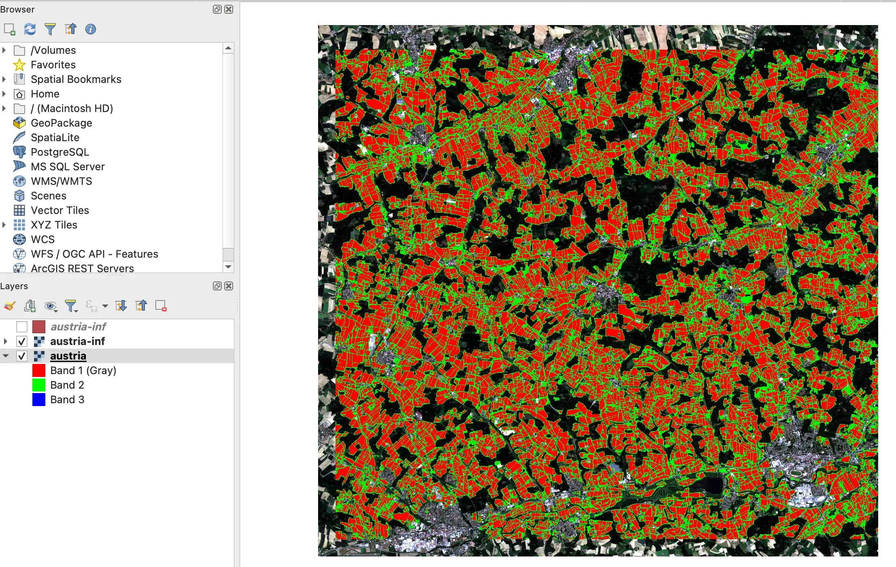

This is a quick tutorial on how to download and format a pair of Sentinel-2 scenes for inference, run a FTW Baseline model and produce fiboa (GeoParquet) output. You can do this for anywhere in the world, and we'll use a small area in Austria for this example. The following video shows the process:
Downloading the Model
The easiest way to get started is to download the model from the FTW Baseline repo. Just navigate to the Releases page and select any of the four models for download. There's not a ton of difference between two class and three class models - the two classes are field and non-field, and the third class is the boundary (but it's not used in the polygonization / fiboa output).
The 'CCBY' models are trained only on data with CC-BY licenses (or more liberal ones), so they are best for companies who want to be sure the IP in the model is totally clean. The 'FULL' models use all the datasets in FTW - all data in FTW is openly licensed, but there are 'share-alike' and 'non-commercial' licenses in the full dataset. You can see detailed licensing information for each dataset at the bottom of the FTW data homepage in Source Cooperative. It's relatively easy to train your own models, selecting exactly which datasets to use, but for this exercise we'll just use the pre-trained models.
Downloading the Data
After downloading the model, you can run the following command to download a pair of Sentinel-2 scenes for the area of interest. This will download the data to the current directory as a file named austria.tif.
ftw inference download \
--win_a S2B_MSIL2A_20210617T100559_R022_T33UUP_20210624T063729 \
--win_b S2B_MSIL2A_20210925T101019_R022_T33UUP_20210926T121923 \
-f -o austria.tif --bbox=12.7,48.4,12.97,48.57This will create an 8-band GeoTiff file with the first four bands as the RGB + NIR bands of the first scene, and the last four bands as the RGB + NIR bands of the second scene. You can select your own Sentinel-2 scenes, we recommend using the Planetary Computer Explore tool to find scenes in your desired AOI.
To select the timeframe for the two images (Window A and Window B), look at the crop calendar by USDA to findthe approximate time for planting and harvesting. For example, if you open the crop calendar and select China, you will find that most of the crops are planted from Feb to May, and harvested from Aug to Nov. We then put these dates as filtering parameters in the Planetary Computer Explorer. Set the cloud threshold to 10% or less. Then select a clear observation that covers the full area of interest.
You can include a bounding box to select a subset of the Sentinel-2 scenes. If you don't include a bounding box the tool will download the entire scene, which can take awhile to download and to run inference on. We selected a relatively small area so that you can run see the results in a reasonable amount of time.
Running the Model
Now that you've got the data downloaded and in the right input format, you can run the model. You'll want to copy the model from where you downloaded it to the current directory, and then run the following command:
ftw inference run austria.tif -f -o austria-inf.tif \
--gpu 0 -m 3_Class_FULL_FTW_Pretrained.ckptThis will run the model and save the output as a GeoTiff file named austria-inf.tif. The --gpu flag specifies which GPU to use (starting from 0). If you don't specify a GPU it will run on the CPU, and likely take a while. If you're on an Apple Silicon GPU you can use the --mps_mode flag and it should help.
The results should look something like this (overlaid on the original data, in QGIS):
Producing Vector Output
Next we'll polygonize the output to produce a vector file. We'll use the polygonize command for this.
ftw inference polygonize austria-inf.tifThis will create a GeoParquet file named austria-inf.parquet in the current directory. It will follow the Fiboa standard for geospatial data, and include the area. The polygonization algorithm is not very complex - right now it simplifies things to 15 meters, which smoothes the edges, and removes any polygons that are under 500 meters (configurable with the --simplify flag). We hope to offer more polygonization options in the future, and contributions are welcome. You can also generate GeoJSON, FlatGeobuf or GeoPackage output, just use the --out flag and end the file name with the appropriate extension.
If you haven't managed to get things working feel free to or file an issue and let us know where things went wrong, and we'll hopefully be able to help you out.
Summary
You've done it! You've successfully run a model to generate field boundaries. You can try out the different models and see results in different areas, and even try to train your own models or contribute more training data. Remember that the results won't always be perfect, but our goal is to get the right feedback loops and 'architectures of participation' so that we're all working collaboratively to build robust, global models that will work anywhere. If you've made it this far we'd love to hear from you, so please start a discussion with your experiences, use cases, and any questions or feedback.